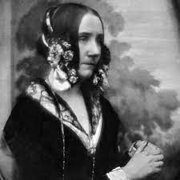
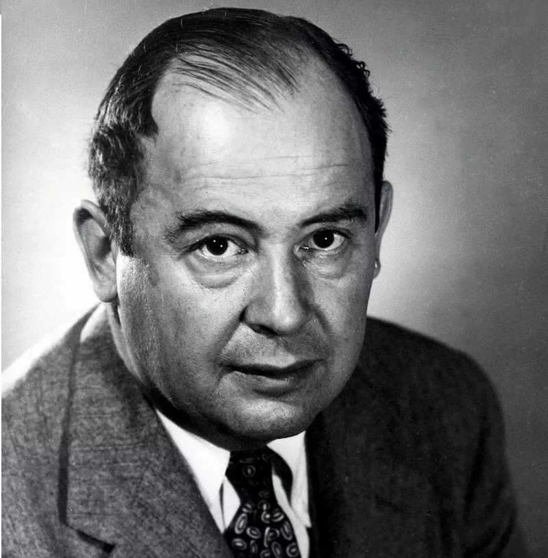

Resumo: Personagens históricos
Nesta aula mencionamos a importância de conhecermos alguns personagens históricos que contribuíram grandemente para o avanço dos computadores.
Embora haja interesse citar cada nome e cada história, não possuímos todos os registros, e são tantos nomes que não haveria um tempo hábil para nos referir de forma honesta sobre cada um destes personagens. Portanto, irei neste resumo acentuar apenas cinco dos milhares de personagens que tiveram de alguma maneira, o papel de influenciar direta ou indiretamente os computadores atuais. Caso haja alguma dúvida, não hesite em entrar em contato conosco e relatar a sua dificuldade, iremos prontamente responder e se preciso for, realizar uma nova aula explicativa.
Não em ordem de importância, mas sim, em ordem de tempo histórico.
Charles Babbage:

Babbage, foi um matemático, filósofo e cientista que desenvolveu a máquina analítica de Babbage, uma maquina capaz de realizar operações matemáticas, conhecida também por ser um computador do tipo mecânico, a contribuição de Babbage neste campo é indiscutível, ele não somente construiu determinada máquina, como também esquematizou e projetou uma segunda maquina ainda mais capaz, embora sua segunda maquina não tenha sido desenvolvida por ele mesmo, devido aos fatores como tempo e recursos, sua maquina é conhecida como um autêntico computador mecânico.
Condessa Byron King:
Mais conhecida como Ada Lovelace, matemática e escritora, a jovem Ada Lovelace, foi responsável pelo desenvolvimento do primeiro algoritmo computacional que permitia a existência de um paradigma programável, conhecida também por desenvolver os cartões perfurados (Tiras de papel com furos precisos) que foram amplamente utilizados na programação de maquinas da época, trabalhou em conjunto com Charles Babbage, onde sua ideia e implementação, foram capazes de permitir que a maquina de Babbage fosse programável, algo totalmente inovador para os padrões da época.
Alan Turing:

Matemático, criptógrafo, escritor e cientista, Turing foi responsável por avanços em vários campos, ficando mais conhecido pelas suas contribuições em campos como I.A (Inteligência Artificial) e computação, foi o principal responsável pelo desenvolvimento da Bombe, um computador que superou a máquina Enigma (Maquina de criptografia alemã) marcando o inicio da supremacia dos computadores elétricos.
John von Neumann:
Matemático húngaro-americano que contribuiu significativamente para o desenvolvimento dos computadores eletrônicos, participando na concepção da arquitetura de computadores conhecida como "arquitetura de von Neumann", que é utilizada até hoje em grande parte dos computadores modernos.
Grace Hopper:

Cientista da computação americana que desenvolveu o primeiro compilador, um programa que traduz código de programação em linguagem de máquina. Ela também foi responsável pelo desenvolvimento da linguagem de programação COBOL, uma das primeiras linguagens de programação de alto nível.
Atenção: Caso necessite de apoio para complementar este resumo, ou uma aula sobre o tema, consulte o setor pedagógico de sua escola.